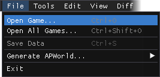
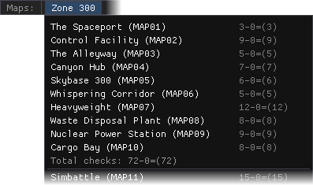
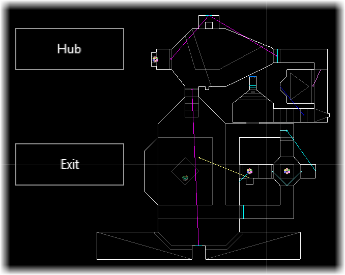
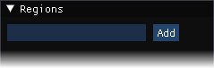
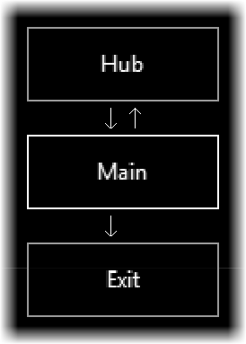
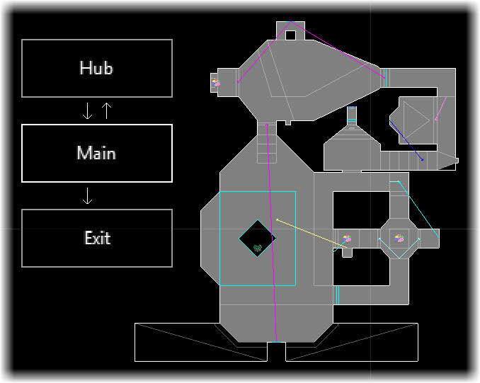

Getting started

Now that we've created our basic game JSON, let's open it up in ap_gen_tool so that we can start making logic for our maps. Note that we also need to have the WAD files present inside the same folder as the ap_gen_tool executable so it can find the game's graphics and level data.Select File → Open Game..., and then select the JSON file that was made in the previous step. ap_gen_tool will pause for a moment while it loads in all the graphics and map data that it needs. If you get a JSON syntax error at this point, you might want to put your JSON file through a validator such as JSONLint to see what's wrong in more detail.

Once ap_gen_tool has parsed all of the data from the WAD, a new menu will appear on the right side of the menu bar, listing every episode and every map contained within those episodes. Next to each map name, the total number of checks in that map will also be displayed.Selecting any map within this new menu will open it up and allow us to start editing logic for that map. For now, we're going to start with MAP01.
Making logic for a level

With MAP01 now open, we should now see something like this; a relatively empty level map with two boxes for the "Hub" and the "Exit". The two boxes are special regions that exist on every map; the "Hub" represents where the player starts and returns to, and the "Exit" represents (naturally) the end of the map that the player is trying to reach.The objective for logic is to make additional regions representing sections of the map, and make connections between those regions to connect them together and enforce conditions between them. We want to have a fully connected graph where the player, starting from the "Hub", can navigate through some regions to reach the "Exit".

The "Regions" window lists all of the regions inside the map, excluding the special "Hub" and "Exit" regions. We currently don't have any regions, so we need to create at least one by typing a name in the box and clicking "Add". Typically, we use "Main" for the name of the first region, but this is just a guideline, not a requirement.As MAP01 is a relatively simple level with no keycards and barely any monster resistance, we should not need more than this one region.

With this region created, we can now start making connections to and from it. Select the Rules tool (Tools → Rules, or press the 3 key) then left click and drag to move the newly created region to wherever you want. Once it's in a good place, right click and drag to start making a connection between two regions; you will see a green arrow indicating where the new connection will go while doing this.Again, due to the simplistic nature of MAP01, all we need to do is make a connection from the "Hub" to our new region, a connection from our new region back to the "Hub" (as the player can return to it from here), and a connection from our new region to the "Exit".
Assigning regions to sectors

Making connections between regions is one half of making logic; the second half is assigning sectors to regions, tying any locations present within them to that region.Select the Region tool (Tools → Region, or press the 2 key); this will start highlighting sectors in the map. If it isn't selected already, also make sure the region we made just a moment ago in the "Regions" window is selected.
Now, left click and (optionally) drag your mouse over sectors in the map to paint them with that region's color. We'll want to paint over every sector that the player could access in this region; in this case, that's the whole map, but this won't always be the case.
After this is done, logic for MAP01 is complete! Not surprising, since it's so simple and only needs the barest minimum of logic. In the next step, though, we'll review a more complex map with keycards and potential weapon logic.